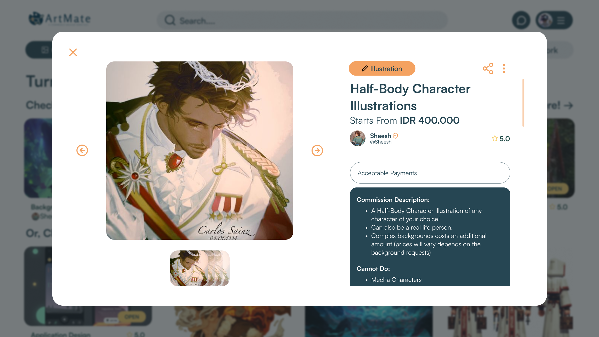

// Project Details
Frontend Developer
Design Service Marketplace Website
ArtMate is a marketplace website project focused on freelance design services, including graphic design, 3D design, illustration, and other digital creative services.
The website was designed to make it easier for users to browse, explore, and order design services through a modern, responsive, and user-friendly interface.
In this project, I worked as both a UI/UX Designer and Frontend Developer, focusing on user flow design, interface development, and creating a more intuitive and interactive user experience.